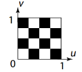
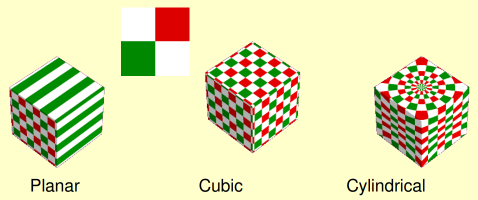
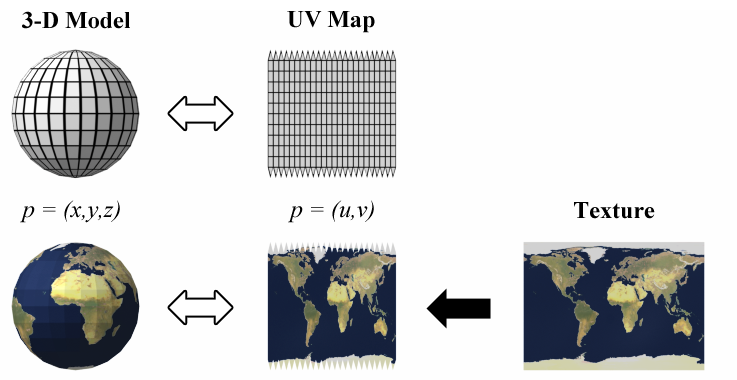
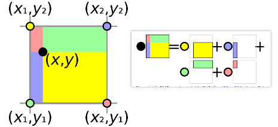
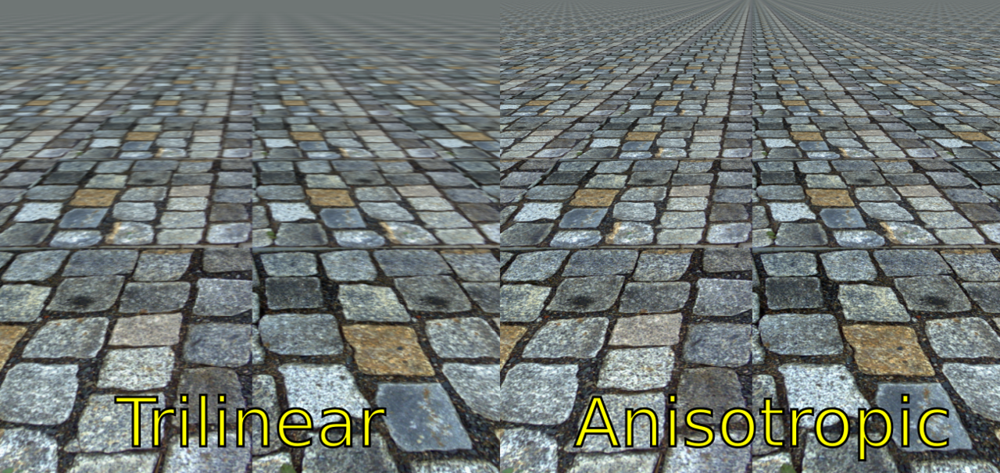
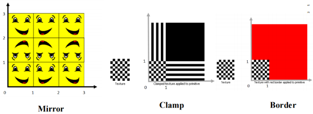
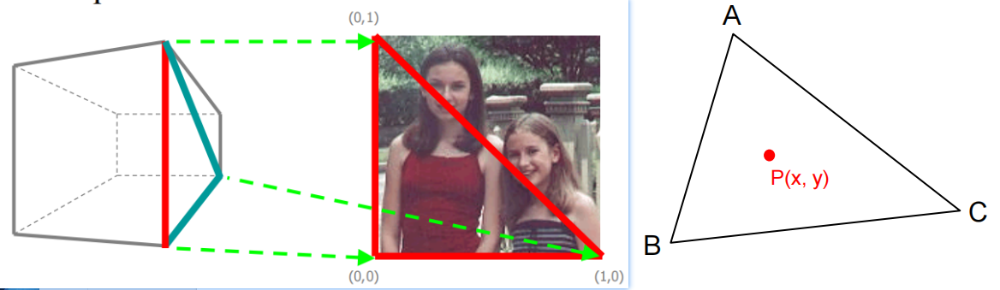
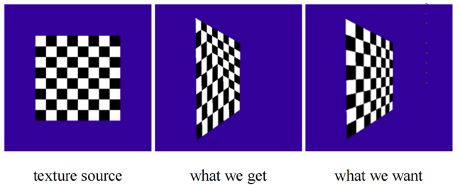

定义
图形学中有两个与图片相关的概念，分别是 Image（贴图）和 Texture（纹理），可以这样区分它们：
- Image：内存意义上的图片，例如
tga, png, jpg - Texture：GPU意义上的图片，例如
RGBA8格式的一对像素组合
因此 Texture 一定是以 GPU像素格式来申明的，并且需要规定 Sampler 的规则。
Color Space
参考阅读：
- 【RealtimeRendering】5. Shading Basic > ColorSpace | Luhao’s Blog
- Gamma、Linear、sRGB 和Unity Color Space，你真懂了吗？ - 知乎
Texture Mapping
将贴图的坐标映射到模型表面，通常采用一种 $u, v$ 坐标的形式，取值为 $[0, 1]$ 的浮点数。

贴图一般都是规规矩矩的方形，但模型的表面却差异很大，这套映射关系是如何选择的？下面展示三种基本的 texture mapping：
- Planar：只考虑两个维度的平面映射
- Cubic：考虑三个维度的立方体映射
- Cylindrical：柱状映射

此时，一个从贴图到模型的完整映射流程是：

Texture Tiling
上面讨论的是 uv 映射 最完美的情况（即 texture Sampler 每个采样点与 Image 一一对应），然而实际应用中，这两者很难对上。
Q：当采样点落在多个 Image 像素之间怎么办？
-
如果粗暴地选取最近的一个像素，那么会导致严重的走样，不可取！称为 Nearest-neighbor Filtering
-
传统的方案是增加到四次采样，并在这四个像素之间作插值，称为 Bilinear interpolation
 -
考虑到当图片与屏幕呈倾斜角度时，我们需要更多的采样点来铺满该区域！这是硬件层面实现的 Anisotropic Filtering。其中
4X AF表示需要多采样4倍的pixel；16X AF同理

参考阅读：Texture filtering - Wikipedia
越多的采样数往往意味着性能开销更大，下面是各种方案的采样数消耗：
| Filering | Samples |
|---|---|
| nearest-neighbor | 1 |
| bilinear | 4 |
| trilinear | 8 |
| AF 4X | 32 |
| AF 16X | 128 |
Texture Tiling
当你翻出一张陈年老照片（分辨率很低），想将它作为 4k 显示屏的壁纸时，问题就出现了：待采样的贴图不足以铺满整个屏幕。
此时就需要 Texture Tiling，即考虑怎么将贴图放大、堆叠，传统的做法有如下几种：
- 下图忽略了
Repeat模式

Interpolation
考虑下面这种情形，我们需要将半张图片渲染到 （下左图）经过透视变换的区域内。而 Vertex Shading 阶段只会接受三个顶点（及其UV属性），那么实际采样中应该如何确定区域内每个像素的 uv 取值呢？

显然这需要选取合适的插值方法！我们可以将这个问题规纳为一般情形（上右图）：
- 已知三个顶点 $A, B, C$ 及其 $uv$ 属性
- 求三角形内任意顶点的 $uv$ 取值
考虑最简单的线性插值方案：
$$
P(x, y) = \alpha A + \beta B + \gamma C \\
\alpha + \beta + \gamma = 1
$$
通常会获得如下的效果（下图中），显然是错误的。

上图的原因用一句话概括为：ViewSpace 的线性变换不等价于 ScreenSpace的线性变换。
解决方案可阅读如下链接，暂时没理解公式：